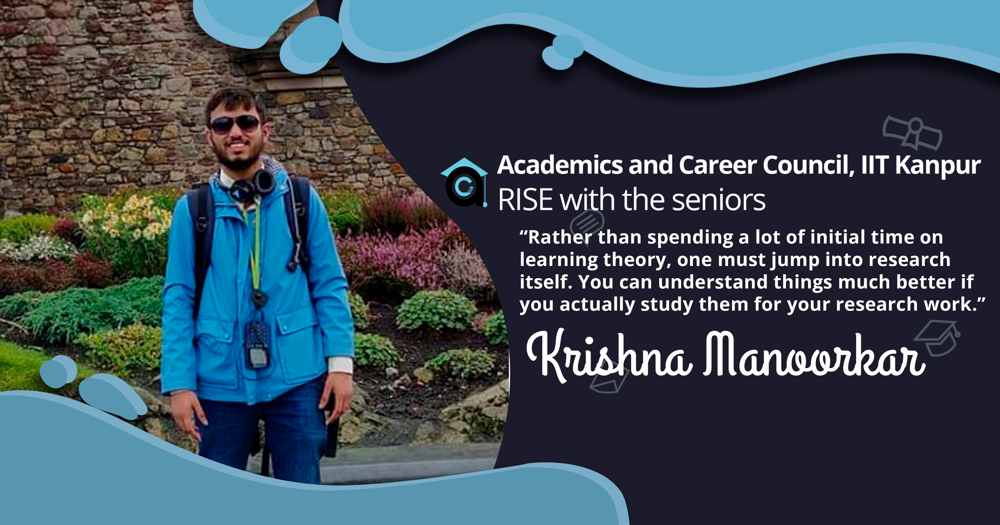
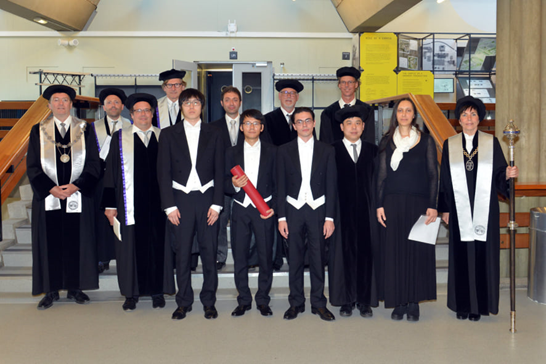
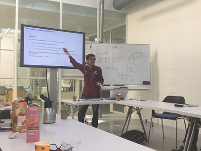
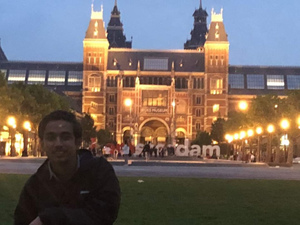

A Dutch Experience | Krishna Manoorkar
May 18, 2020

Getting the Internship
Since my early days at IITK, I have been interested in research in pure mathematics. Thanks
to a project I did with Prof. Mohua Banerjee, during my second year summers, I got
especially interested in mathematical logic. Hence, I chose to pursue research in
mathematical logic for my internship. Although I applied to almost all the intern programs
with opportunities in logic, I could not get an internship through any programs.
Instead, I got the internship through Prof. Banerjee. I remember that when Prof. Banerjee
had agreed to help me get an internship, she had asked if I’d be satisfied with an
internship in India and I had agreed. However, about a week after she asked me, I received
an email from Prof. Alessandra Palmigiano from Delft University.

Alessandra mentioned that she was contacted by Prof. Banerjee. She offered me not only an
internship at Delft University in the Netherlands but also allowed me to stay at her place
in Amsterdam. This effectively reduced my trip’s cost to the flight tickets, which I hoped
that KVPY scholarship would cover. In any case, I decided that I should take the
opportunity, since Alessandra’s groups worked on algebraic proof theory which was in line
with my interests.
Both Mohua and Alessandra helped me through all the logistics and I managed to reach
Amsterdam without any hiccups.
My Internship Experience
I was received at the Amsterdam airport by Prof. Alessandra and her PhD student Fei Liang, a
short thin Chinese guy. Alessandra drove us to her place and after considerable collective
struggles we managed to get my bags up a typical narrow Dutch staircase and I was shown my
room.
Fei lived in the adjacent room and we had a big study room which we used for all the work.
Alessandra also introduced me to her husband Prof. Nachoem Wajnberg, a professor of Business
Science at the Amsterdam University. We had many discussions with Nachoem on applications of
our work to business sciences.
Alessandra believes that rather than spending a lot of initial time on learning theory, one
must jump into research itself. She told me that you can understand things much better if
you actually study them for your research work.
Alessandra’s home was the best possible environment for the research. We had a comfortable
office for a lot of people, many people with different expertise to help and a lot of
enthusiastic discussions on logic in general.

I soon realised that collaboration is an essential part of modern research and cohesive
research groups are much more efficient than individuals. I worked with Fei and Apostolos, 2
PhD students of Alessandra and Dr. Guiseppe Greco, a postdoc at Ultrecht University. I also
soon realised that writing research papers is a very tedious job as apart from your results,
you need to put a lot of effort in language, presentation and references to make your work
publishable. The members of the household helped me a lot in not only, actual research work
but also, other technical stuff involved.
During my stay, we were visited by Prof. Hiroakira Ono from Japan for around 2 weeks. Prof.
Ono is one of the pioneers in algebraic proof theory and I had the pleasure of meeting him.
Attend Fei and Apostolos’s PhD defence ceremony was another memorable experience. Dutch
universities ask students to arrange international conferences at the convocation ceremony.
We had a conference on logic for social behaviour at Delft University. I met many
researchers in different fields related to logic during this conference from all across the
world. Some of them even lived at Alessandra’s place for some days. I also presented my
earlier work on rough algebras at the conference. It was a unique experience to witness
Dutch convocations.
After convocation, I had little time left and it was the most hectic, yet productive part of
the internship. We wanted to get as much work done as possible before I leave. I took a few
days off in the last week to get a much needed break. By the end we managed to almost finish
the first draft of rough concepts paper (which was of course changed many more times before
submission). We have managed to publish 3 papers after a long period of corrections,
submissions, revisions, etc.
Living in Amsterdam
Apart from my professional indulgences, I attended convocation parties and treats, met new
people, walked in parks, watched FIFA matches at pubs, and went touring the beautiful
streets and canals of Amsterdam and a number of places across the Netherlands. I was also
visited by my sister and some IITK friends. To my delight, we lived very close to Van Gogh
museum, which is probably the most famous tourist spot in Amsterdam.

Fei who had also come out of China for the first time and being an Asian, had a lifestyle
similar to mine, became my best friend in Amsterdam.
As I left, we had to make considerably less effort to get my luggage down the same
staircase, as all the food in it was finished. Alessandra dropped me at the airport in her
car again while inviting me to work with her again.
We still work together on research projects. I joined Alessandra and her group at a research
workshop in South Africa in 2019 and more recently in the Netherlands for a workshop at the
Lorentz Centre, Leieden. Alessandra’s group is one of the most vibrant and hard working
groups in the field and I feel grateful to have worked with her.
-Krishna Manoorkar
-edited by Abhimanyu Sethia